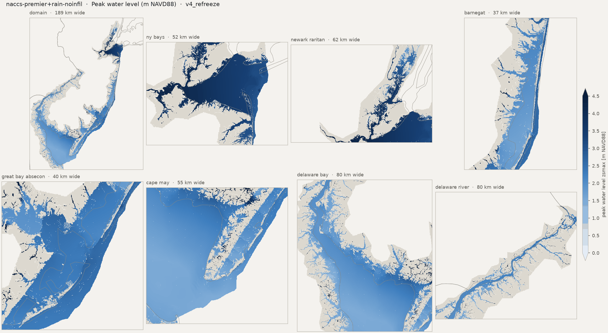
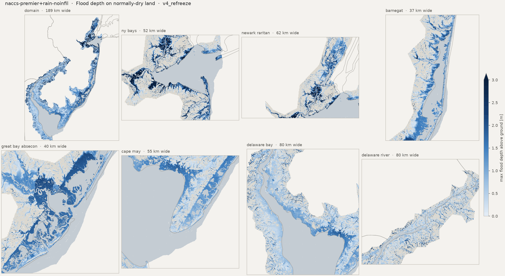
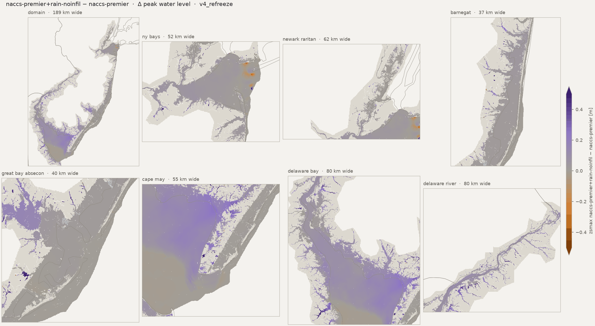
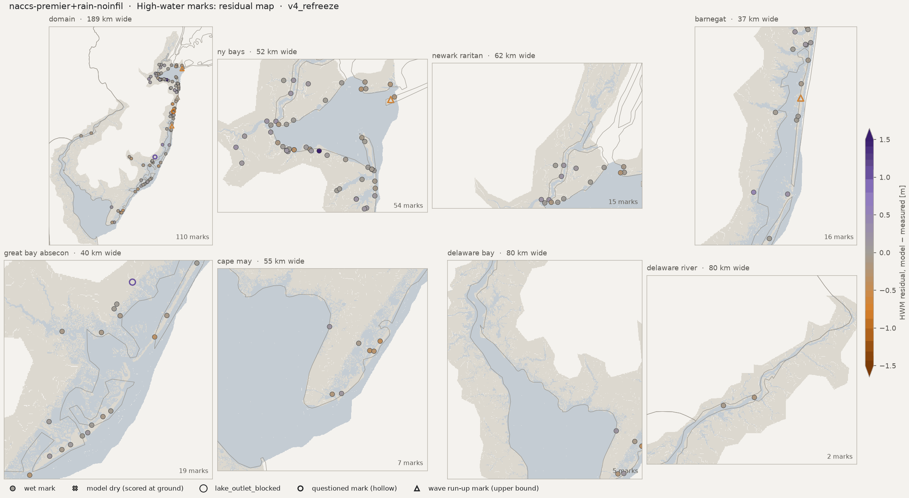
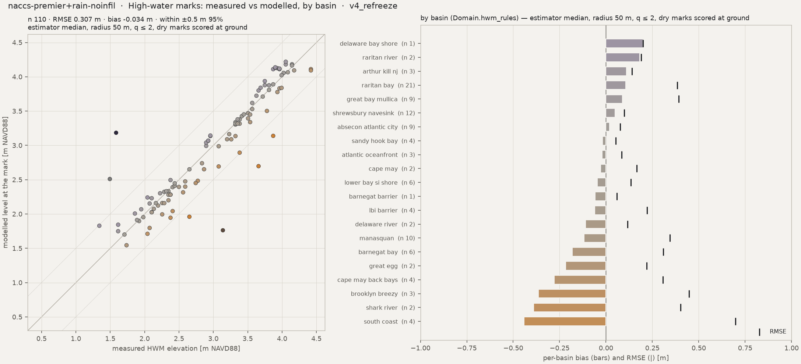
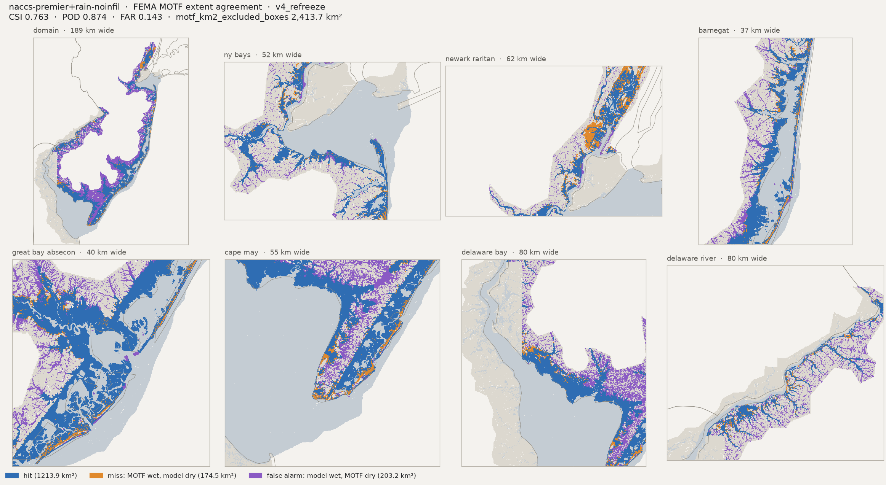
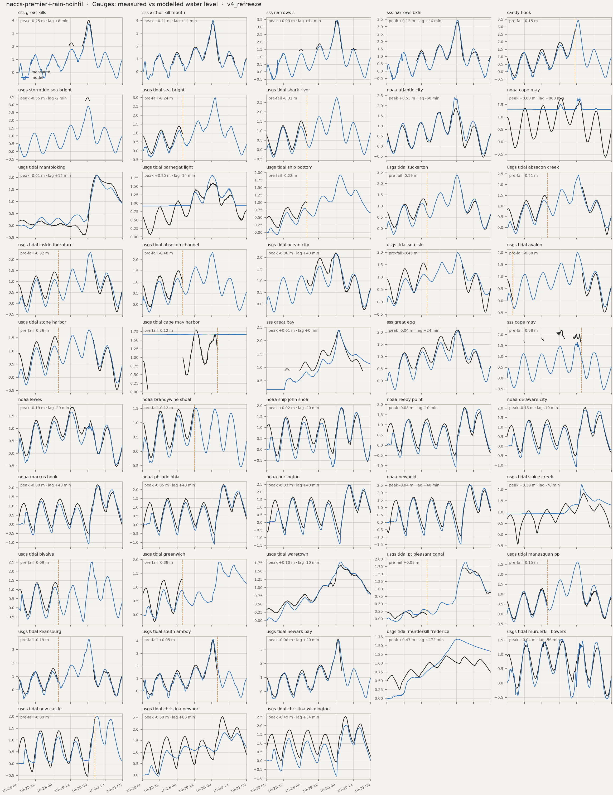
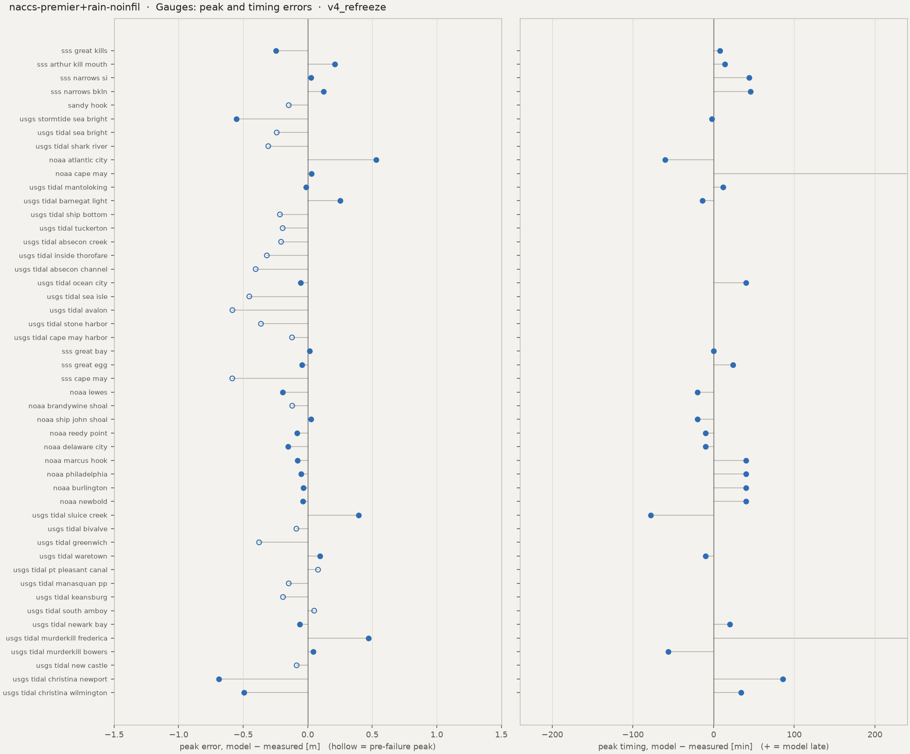
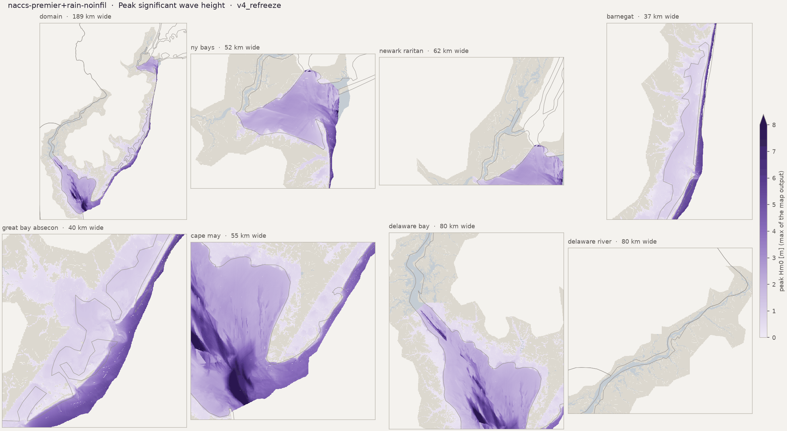

Run card, flags and the standard figure set. HWM numbers: estimator median, radius 50 m. Compare with naccs-premier
Preliminary research diagnostics — not peer-reviewed results.
HWM: estimator median, radius 50 m, q ≤ 2, dry marks scored at ground (the _scored keys). CSI / POD / FAR on sheet-valid land; km² excl. = motf_km2_excluded_boxes.









| peak_zb_sss_great_kills_m | -1.5018250942230225 |
| peak_obs_sss_great_kills_m | 3.990640566666667 |
| peak_obs_time_sss_great_kills | 2012-10-30T00:42 |
| peak_mod_full_sss_great_kills_m | 3.742926597595215 |
| peak_mod_full_time_sss_great_kills | 2012-10-30T00:50 |
| peak_err_sss_great_kills_m | -0.247713969071452 |
| peak_lag_sss_great_kills_min | 8.0 |
| peak_zb_sss_arthur_kill_mouth_m | -1.062054991722107 |
| peak_obs_sss_arthur_kill_mouth_m | 3.8134290000000006 |
| peak_obs_time_sss_arthur_kill_mouth | 2012-10-30T00:36 |
| peak_mod_full_sss_arthur_kill_mouth_m | 4.023544788360596 |
| peak_mod_full_time_sss_arthur_kill_mouth | 2012-10-30T00:50 |
| peak_err_sss_arthur_kill_mouth_m | 0.210115788360595 |
| peak_lag_sss_arthur_kill_mouth_min | 14.0 |
| peak_zb_sss_narrows_si_m | -2.052652597427368 |
| peak_obs_sss_narrows_si_m | 3.4239073 |
| peak_obs_time_sss_narrows_si | 2012-10-30T00:06 |
| peak_mod_full_sss_narrows_si_m | 3.4497132301330566 |
| peak_mod_full_time_sss_narrows_si | 2012-10-30T00:50 |
| peak_err_sss_narrows_si_m | 0.0258059301330564 |
| peak_lag_sss_narrows_si_min | 44.0 |
| peak_zb_sss_narrows_bkln_m | -3.9864342212677 |
| peak_obs_sss_narrows_bkln_m | 3.315567833333333 |
| peak_obs_time_sss_narrows_bkln | 2012-10-30T00:24 |
| peak_mod_full_sss_narrows_bkln_m | 3.439015388488769 |
| peak_mod_full_time_sss_narrows_bkln | 2012-10-30T01:10 |
| peak_err_sss_narrows_bkln_m | 0.1234475551554363 |
| peak_lag_sss_narrows_bkln_min | 46.0 |
| peak_zb_sandy_hook_m | -4.570703029632568 |
| peak_obs_sandy_hook_m | 2.808 |
| peak_obs_time_sandy_hook | 2012-10-29T23:00 |
| peak_mod_full_sandy_hook_m | 3.4347312450408936 |
| peak_mod_full_time_sandy_hook | 2012-10-30T01:00 |
| peak_mod_prefail_sandy_hook_m | 2.6612117290496826 |
| peak_err_prefail_sandy_hook_m | -0.1467882709503172 |
| peak_record_ends_sandy_hook | 2012-10-29 23:00 |
| peak_zb_usgs_stormtide_sea_bright_m | -2.3048408031463623 |
| peak_obs_usgs_stormtide_sea_bright_m | 3.4651196864959743 |
| peak_obs_time_usgs_stormtide_sea_bright | 2012-10-30T00:12 |
| peak_mod_full_usgs_stormtide_sea_bright_m | 2.914170026779175 |
| peak_mod_full_time_usgs_stormtide_sea_bright | 2012-10-30T00:10 |
| peak_err_usgs_stormtide_sea_bright_m | -0.5509496597167995 |
| peak_lag_usgs_stormtide_sea_bright_min | -2.0 |
| peak_zb_usgs_tidal_sea_bright_m | -4.364447116851807 |
| peak_obs_usgs_tidal_sea_bright_m | 1.383792 |
| peak_obs_time_usgs_tidal_sea_bright | 2012-10-29T01:12 |
| peak_mod_full_usgs_tidal_sea_bright_m | 2.9936277866363525 |
| peak_mod_full_time_usgs_tidal_sea_bright | 2012-10-30T02:20 |
| peak_mod_prefail_usgs_tidal_sea_bright_m | 1.1439273357391355 |
| peak_err_prefail_usgs_tidal_sea_bright_m | -0.2398646642608644 |
| peak_record_ends_usgs_tidal_sea_bright | 2012-10-29 04:00 |
| peak_zb_usgs_tidal_shark_river_m | -4.12901782989502 |
| peak_obs_usgs_tidal_shark_river_m | 1.527048 |
| peak_obs_time_usgs_tidal_shark_river | 2012-10-29T00:00 |
| peak_mod_full_usgs_tidal_shark_river_m | 2.756735324859619 |
| peak_mod_full_time_usgs_tidal_shark_river | 2012-10-30T00:30 |
| peak_mod_prefail_usgs_tidal_shark_river_m | 1.2245752811431885 |
| peak_err_prefail_usgs_tidal_shark_river_m | -0.3055207188568114 |
| peak_record_ends_usgs_tidal_shark_river | 2012-10-29 04:00 |
| peak_zb_noaa_atlantic_city_m | -7.123184680938721 |
| peak_obs_noaa_atlantic_city_m | 1.877 |
| peak_obs_time_noaa_atlantic_city | 2012-10-30T00:00 |
| peak_mod_full_noaa_atlantic_city_m | 2.4059133529663086 |
| peak_mod_full_time_noaa_atlantic_city | 2012-10-29T23:00 |
| peak_err_noaa_atlantic_city_m | 0.5289133529663086 |
| peak_lag_noaa_atlantic_city_min | -60.0 |
| peak_zb_noaa_cape_may_m | 1.2928768396377563 |
| peak_obs_noaa_cape_may_m | 1.755 |
| peak_obs_time_noaa_cape_may | 2012-10-29T13:00 |
| peak_mod_full_noaa_cape_may_m | 1.784177541732788 |
| peak_mod_full_time_noaa_cape_may | 2012-10-30T02:20 |
| peak_err_noaa_cape_may_m | 0.0291775417327881 |
| peak_lag_noaa_cape_may_min | 800.0 |
| peak_zb_usgs_tidal_mantoloking_m | -2.4557981491088867 |
| peak_obs_usgs_tidal_mantoloking_m | 2.1061680000000003 |
| peak_obs_time_usgs_tidal_mantoloking | 2012-10-30T06:18 |
| peak_mod_full_usgs_tidal_mantoloking_m | 2.094684600830078 |
| peak_mod_full_time_usgs_tidal_mantoloking | 2012-10-30T06:30 |
| peak_err_usgs_tidal_mantoloking_m | -0.0114833991699221 |
| peak_lag_usgs_tidal_mantoloking_min | 12.0 |
| peak_zb_usgs_tidal_barnegat_light_m | 0.915690541267395 |
| peak_obs_usgs_tidal_barnegat_light_m | 1.588008 |
| peak_obs_time_usgs_tidal_barnegat_light | 2012-10-30T00:24 |
| peak_mod_full_usgs_tidal_barnegat_light_m | 1.8383097648620603 |
| peak_mod_full_time_usgs_tidal_barnegat_light | 2012-10-30T00:10 |
| peak_err_usgs_tidal_barnegat_light_m | 0.2503017648620604 |
| peak_lag_usgs_tidal_barnegat_light_min | -14.0 |
| peak_zb_usgs_tidal_ship_bottom_m | -4.847646713256836 |
| peak_obs_usgs_tidal_ship_bottom_m | 1.024128 |
| peak_obs_time_usgs_tidal_ship_bottom | 2012-10-29T02:54 |
| peak_mod_full_usgs_tidal_ship_bottom_m | 1.922101616859436 |
| peak_mod_full_time_usgs_tidal_ship_bottom | 2012-10-30T03:00 |
| peak_mod_prefail_usgs_tidal_ship_bottom_m | 0.8090420365333557 |
| peak_err_prefail_usgs_tidal_ship_bottom_m | -0.2150859634666442 |
| peak_record_ends_usgs_tidal_ship_bottom | 2012-10-29 03:54 |
| peak_zb_usgs_tidal_tuckerton_m | -2.1096279621124268 |
| peak_obs_usgs_tidal_tuckerton_m | 1.591056 |
| peak_obs_time_usgs_tidal_tuckerton | 2012-10-30T04:00 |
| peak_mod_full_usgs_tidal_tuckerton_m | 2.378422975540161 |
| peak_mod_full_time_usgs_tidal_tuckerton | 2012-10-30T00:40 |
| peak_mod_prefail_usgs_tidal_tuckerton_m | 1.1319624185562134 |
| peak_err_prefail_usgs_tidal_tuckerton_m | -0.1939175814437865 |
| peak_record_ends_usgs_tidal_tuckerton | 2012-10-29 03:54 |
| peak_zb_usgs_tidal_absecon_creek_m | -1.0937918424606323 |
| peak_obs_usgs_tidal_absecon_creek_m | 1.87452 |
| peak_obs_time_usgs_tidal_absecon_creek | 2012-10-30T04:00 |
| peak_mod_full_usgs_tidal_absecon_creek_m | 2.44971227645874 |
| peak_mod_full_time_usgs_tidal_absecon_creek | 2012-10-30T01:10 |
| peak_mod_prefail_usgs_tidal_absecon_creek_m | 1.287494421005249 |
| peak_err_prefail_usgs_tidal_absecon_creek_m | -0.2060255789947511 |
| peak_record_ends_usgs_tidal_absecon_creek | 2012-10-29 03:54 |
| peak_zb_usgs_tidal_inside_thorofare_m | -4.974030494689941 |
| peak_obs_usgs_tidal_inside_thorofare_m | 1.712976 |
| peak_obs_time_usgs_tidal_inside_thorofare | 2012-10-30T04:00 |
| peak_mod_full_usgs_tidal_inside_thorofare_m | 2.322259426116944 |
| peak_mod_full_time_usgs_tidal_inside_thorofare | 2012-10-30T01:50 |
| peak_mod_prefail_usgs_tidal_inside_thorofare_m | 1.119207739830017 |
| peak_err_prefail_usgs_tidal_inside_thorofare_m | -0.3164002601699829 |
| peak_record_ends_usgs_tidal_inside_thorofare | 2012-10-29 03:54 |
| peak_zb_usgs_tidal_absecon_channel_m | -3.296544551849365 |
| peak_obs_usgs_tidal_absecon_channel_m | 1.5575280000000002 |
| peak_obs_time_usgs_tidal_absecon_channel | 2012-10-29T01:06 |
| peak_mod_full_usgs_tidal_absecon_channel_m | 2.3197152614593506 |
| peak_mod_full_time_usgs_tidal_absecon_channel | 2012-10-30T00:20 |
| peak_mod_prefail_usgs_tidal_absecon_channel_m | 1.1545329093933103 |
| peak_err_prefail_usgs_tidal_absecon_channel_m | -0.4029950906066897 |
| peak_record_ends_usgs_tidal_absecon_channel | 2012-10-29 03:54 |
| peak_zb_usgs_tidal_ocean_city_m | -7.289493083953857 |
| peak_obs_usgs_tidal_ocean_city_m | 2.2098 |
| peak_obs_time_usgs_tidal_ocean_city | 2012-10-30T00:00 |
| peak_mod_full_usgs_tidal_ocean_city_m | 2.154576301574707 |
| peak_mod_full_time_usgs_tidal_ocean_city | 2012-10-30T00:40 |
| peak_err_usgs_tidal_ocean_city_m | -0.0552236984252929 |
| peak_lag_usgs_tidal_ocean_city_min | 40.0 |
| peak_zb_usgs_tidal_sea_isle_m | -1.7741228342056274 |
| peak_obs_usgs_tidal_sea_isle_m | 1.575816 |
| peak_obs_time_usgs_tidal_sea_isle | 2012-10-29T01:18 |
| peak_mod_full_usgs_tidal_sea_isle_m | 1.9905388355255127 |
| peak_mod_full_time_usgs_tidal_sea_isle | 2012-10-30T00:50 |
| peak_mod_prefail_usgs_tidal_sea_isle_m | 1.1235990524291992 |
| peak_err_prefail_usgs_tidal_sea_isle_m | -0.4522169475708009 |
| peak_record_ends_usgs_tidal_sea_isle | 2012-10-29 03:54 |
| peak_zb_usgs_tidal_avalon_m | -6.805160999298096 |
| peak_obs_usgs_tidal_avalon_m | 1.139952 |
| peak_obs_time_usgs_tidal_avalon | 2012-10-30T04:00 |
| peak_mod_full_usgs_tidal_avalon_m | 2.001063823699951 |
| peak_mod_full_time_usgs_tidal_avalon | 2012-10-30T00:40 |
| peak_mod_prefail_usgs_tidal_avalon_m | 0.3191593289375305 |
| peak_err_prefail_usgs_tidal_avalon_m | -0.5830486710624695 |
| peak_record_ends_usgs_tidal_avalon | 2012-10-28 03:54 |
| peak_zb_usgs_tidal_stone_harbor_m | -7.561686038970947 |
| peak_obs_usgs_tidal_stone_harbor_m | 1.551432 |
| peak_obs_time_usgs_tidal_stone_harbor | 2012-10-29T01:12 |
| peak_mod_full_usgs_tidal_stone_harbor_m | 1.802688837051392 |
| peak_mod_full_time_usgs_tidal_stone_harbor | 2012-10-30T01:00 |
| peak_mod_prefail_usgs_tidal_stone_harbor_m | 1.1895508766174316 |
| peak_err_prefail_usgs_tidal_stone_harbor_m | -0.3618811233825685 |
| peak_record_ends_usgs_tidal_stone_harbor | 2012-10-29 03:54 |
| peak_zb_usgs_tidal_cape_may_harbor_m | 1.65626323223114 |
| peak_obs_usgs_tidal_cape_may_harbor_m | 1.79832 |
| peak_obs_time_usgs_tidal_cape_may_harbor | 2012-10-29T12:42 |
| peak_mod_full_usgs_tidal_cape_may_harbor_m | 1.6769659519195557 |
| peak_mod_full_time_usgs_tidal_cape_may_harbor | 2012-10-29T21:50 |
| peak_mod_prefail_usgs_tidal_cape_may_harbor_m | 1.6769659519195557 |
| peak_err_prefail_usgs_tidal_cape_may_harbor_m | -0.1213540480804444 |
| peak_record_ends_usgs_tidal_cape_may_harbor | 2012-10-30 03:54 |
| peak_zb_sss_great_bay_m | 0.1733946055173874 |
| peak_obs_sss_great_bay_m | 2.389551566666667 |
| peak_obs_time_sss_great_bay | 2012-10-30T02:00 |
| peak_mod_full_sss_great_bay_m | 2.4038102626800537 |
| peak_mod_full_time_sss_great_bay | 2012-10-30T02:00 |
| peak_err_sss_great_bay_m | 0.0142586960133868 |
| peak_lag_sss_great_bay_min | 0.0 |
| peak_zb_sss_great_egg_m | -1.4158239364624023 |
| peak_obs_sss_great_egg_m | 2.098467566666667 |
| peak_obs_time_sss_great_egg | 2012-10-30T00:36 |
| peak_mod_full_sss_great_egg_m | 2.054539442062378 |
| peak_mod_full_time_sss_great_egg | 2012-10-30T01:00 |
| peak_err_sss_great_egg_m | -0.0439281246042888 |
| peak_lag_sss_great_egg_min | 24.0 |
| peak_zb_sss_cape_may_m | -8.127169609069824 |
| peak_obs_sss_cape_may_m | 2.24273711641651 |
| peak_obs_time_sss_cape_may | 2012-10-29T13:48 |
| peak_mod_full_sss_cape_may_m | 1.6585664749145508 |
| peak_mod_full_time_sss_cape_may | 2012-10-30T00:30 |
| peak_mod_prefail_sss_cape_may_m | 1.6585664749145508 |
| peak_err_prefail_sss_cape_may_m | -0.5841706415019599 |
| peak_record_ends_sss_cape_may | 2012-10-30 03:12 |
| peak_zb_noaa_lewes_m | -8.599800109863281 |
| peak_obs_noaa_lewes_m | 1.853 |
| peak_obs_time_noaa_lewes | 2012-10-29T13:00 |
| peak_mod_full_noaa_lewes_m | 1.6599687337875366 |
| peak_mod_full_time_noaa_lewes | 2012-10-29T12:40 |
| peak_err_noaa_lewes_m | -0.1930312662124633 |
| peak_lag_noaa_lewes_min | -20.0 |
| peak_zb_noaa_brandywine_shoal_m | -3.865700483322144 |
| peak_obs_noaa_brandywine_shoal_m | 1.5445000000000004 |
| peak_obs_time_noaa_brandywine_shoal | 2012-10-29T12:00 |
| peak_mod_full_noaa_brandywine_shoal_m | 1.5074878931045532 |
| peak_mod_full_time_noaa_brandywine_shoal | 2012-10-29T12:50 |
| peak_mod_prefail_noaa_brandywine_shoal_m | 1.4248061180114746 |
| peak_err_prefail_noaa_brandywine_shoal_m | -0.1196938819885258 |
| peak_record_ends_noaa_brandywine_shoal | 2012-10-29 12:00 |
| peak_zb_noaa_ship_john_shoal_m | -4.995533466339111 |
| peak_obs_noaa_ship_john_shoal_m | 1.902 |
| peak_obs_time_noaa_ship_john_shoal | 2012-10-30T04:00 |
| peak_mod_full_noaa_ship_john_shoal_m | 1.9267927408218384 |
| peak_mod_full_time_noaa_ship_john_shoal | 2012-10-30T03:40 |
| peak_err_noaa_ship_john_shoal_m | 0.0247927408218382 |
| peak_lag_noaa_ship_john_shoal_min | -20.0 |
| peak_zb_noaa_reedy_point_m | -8.337135314941406 |
| peak_obs_noaa_reedy_point_m | 1.866 |
| peak_obs_time_noaa_reedy_point | 2012-10-30T06:00 |
| peak_mod_full_noaa_reedy_point_m | 1.782724380493164 |
| peak_mod_full_time_noaa_reedy_point | 2012-10-30T05:50 |
| peak_err_noaa_reedy_point_m | -0.083275619506836 |
| peak_lag_noaa_reedy_point_min | -10.0 |
| peak_zb_noaa_delaware_city_m | -7.879655838012695 |
| peak_obs_noaa_delaware_city_m | 2.048 |
| peak_obs_time_noaa_delaware_city | 2012-10-30T06:00 |
| peak_mod_full_noaa_delaware_city_m | 1.895255446434021 |
| peak_mod_full_time_noaa_delaware_city | 2012-10-30T05:50 |
| peak_err_noaa_delaware_city_m | -0.152744553565979 |
| peak_lag_noaa_delaware_city_min | -10.0 |
| peak_zb_noaa_marcus_hook_m | -6.720826625823975 |
| peak_obs_noaa_marcus_hook_m | 2.175 |
| peak_obs_time_noaa_marcus_hook | 2012-10-30T07:00 |
| peak_mod_full_noaa_marcus_hook_m | 2.096832036972046 |
| peak_mod_full_time_noaa_marcus_hook | 2012-10-30T07:40 |
| peak_err_noaa_marcus_hook_m | -0.0781679630279539 |
| peak_lag_noaa_marcus_hook_min | 40.0 |
| peak_zb_noaa_philadelphia_m | -4.274573802947998 |
| peak_obs_noaa_philadelphia_m | 2.291 |
| peak_obs_time_noaa_philadelphia | 2012-10-30T08:00 |
| peak_mod_full_noaa_philadelphia_m | 2.238971948623657 |
| peak_mod_full_time_noaa_philadelphia | 2012-10-30T08:40 |
| peak_err_noaa_philadelphia_m | -0.0520280513763427 |
| peak_lag_noaa_philadelphia_min | 40.0 |
| peak_zb_noaa_burlington_m | -14.647468566894531 |
| peak_obs_noaa_burlington_m | 2.4845000000000006 |
| peak_obs_time_noaa_burlington | 2012-10-30T09:00 |
| peak_mod_full_noaa_burlington_m | 2.4498941898345947 |
| peak_mod_full_time_noaa_burlington | 2012-10-30T09:40 |
| peak_err_noaa_burlington_m | -0.0346058101654058 |
| peak_lag_noaa_burlington_min | 40.0 |
| peak_zb_noaa_newbold_m | -15.88861846923828 |
| peak_obs_noaa_newbold_m | 2.5589999999999997 |
| peak_obs_time_noaa_newbold | 2012-10-30T09:00 |
| peak_mod_full_noaa_newbold_m | 2.5202183723449707 |
| peak_mod_full_time_noaa_newbold | 2012-10-30T09:40 |
| peak_err_noaa_newbold_m | -0.0387816276550285 |
| peak_lag_noaa_newbold_min | 40.0 |
| peak_zb_usgs_tidal_sluice_creek_m | 0.9151930212974548 |
| peak_obs_usgs_tidal_sluice_creek_m | 1.831848 |
| peak_obs_time_usgs_tidal_sluice_creek | 2012-10-30T04:48 |
| peak_mod_full_usgs_tidal_sluice_creek_m | 2.226359844207764 |
| peak_mod_full_time_usgs_tidal_sluice_creek | 2012-10-30T03:30 |
| peak_err_usgs_tidal_sluice_creek_m | 0.3945118442077637 |
| peak_lag_usgs_tidal_sluice_creek_min | -78.0 |
| peak_zb_usgs_tidal_bivalve_m | -7.203732490539551 |
| peak_obs_usgs_tidal_bivalve_m | 1.3929360000000002 |
| peak_obs_time_usgs_tidal_bivalve | 2012-10-29T01:48 |
| peak_mod_full_usgs_tidal_bivalve_m | 2.510852813720703 |
| peak_mod_full_time_usgs_tidal_bivalve | 2012-10-30T03:00 |
| peak_mod_prefail_usgs_tidal_bivalve_m | 1.3053796291351318 |
| peak_err_prefail_usgs_tidal_bivalve_m | -0.0875563708648683 |
| peak_record_ends_usgs_tidal_bivalve | 2012-10-29 03:54 |
| peak_zb_usgs_tidal_greenwich_m | -2.305095911026001 |
| peak_obs_usgs_tidal_greenwich_m | 1.286256 |
| peak_obs_time_usgs_tidal_greenwich | 2012-10-29T03:18 |
| peak_mod_full_usgs_tidal_greenwich_m | 1.915529489517212 |
| peak_mod_full_time_usgs_tidal_greenwich | 2012-10-30T05:10 |
| peak_mod_prefail_usgs_tidal_greenwich_m | 0.9099373817443848 |
| peak_err_prefail_usgs_tidal_greenwich_m | -0.3763186182556153 |
| peak_record_ends_usgs_tidal_greenwich | 2012-10-29 03:54 |
| peak_zb_usgs_tidal_waretown_m | -1.282608151435852 |
| peak_obs_usgs_tidal_waretown_m | 1.682496 |
| peak_obs_time_usgs_tidal_waretown | 2012-10-30T03:30 |
| peak_mod_full_usgs_tidal_waretown_m | 1.7786757946014404 |
| peak_mod_full_time_usgs_tidal_waretown | 2012-10-30T03:20 |
| peak_err_usgs_tidal_waretown_m | 0.0961797946014404 |
| peak_lag_usgs_tidal_waretown_min | -10.0 |
| peak_zb_usgs_tidal_pt_pleasant_canal_m | -7.331141471862793 |
| peak_obs_usgs_tidal_pt_pleasant_canal_m | 1.703832 |
| peak_obs_time_usgs_tidal_pt_pleasant_canal | 2012-10-30T05:42 |
| peak_mod_full_usgs_tidal_pt_pleasant_canal_m | 1.9066293239593504 |
| peak_mod_full_time_usgs_tidal_pt_pleasant_canal | 2012-10-30T06:30 |
| peak_mod_prefail_usgs_tidal_pt_pleasant_canal_m | 0.3148066997528076 |
| peak_err_prefail_usgs_tidal_pt_pleasant_canal_m | 0.0801106997528076 |
| peak_record_ends_usgs_tidal_pt_pleasant_canal | 2012-10-29 03:54 |
| peak_zb_usgs_tidal_manasquan_pp_m | -5.012785911560059 |
| peak_obs_usgs_tidal_manasquan_pp_m | 1.331976 |
| peak_obs_time_usgs_tidal_manasquan_pp | 2012-10-29T00:06 |
| peak_mod_full_usgs_tidal_manasquan_pp_m | 2.6251587867736816 |
| peak_mod_full_time_usgs_tidal_manasquan_pp | 2012-10-30T00:30 |
| peak_mod_prefail_usgs_tidal_manasquan_pp_m | 1.1852531433105469 |
| peak_err_prefail_usgs_tidal_manasquan_pp_m | -0.1467228566894531 |
| peak_record_ends_usgs_tidal_manasquan_pp | 2012-10-29 03:54 |
| peak_zb_usgs_tidal_keansburg_m | -1.2813526391983032 |
| peak_obs_usgs_tidal_keansburg_m | 1.591056 |
| peak_obs_time_usgs_tidal_keansburg | 2012-10-29T00:00 |
| peak_mod_full_usgs_tidal_keansburg_m | 3.770630121231079 |
| peak_mod_full_time_usgs_tidal_keansburg | 2012-10-30T00:50 |
| peak_mod_prefail_usgs_tidal_keansburg_m | 1.399882674217224 |
| peak_err_prefail_usgs_tidal_keansburg_m | -0.1911733257827759 |
| peak_record_ends_usgs_tidal_keansburg | 2012-10-29 03:54 |
| peak_zb_usgs_tidal_south_amboy_m | -1.2796423435211182 |
| peak_obs_usgs_tidal_south_amboy_m | 4.087368000000001 |
| peak_obs_time_usgs_tidal_south_amboy | 2012-10-30T00:42 |
| peak_mod_full_usgs_tidal_south_amboy_m | 4.13764238357544 |
| peak_mod_full_time_usgs_tidal_south_amboy | 2012-10-30T00:50 |
| peak_mod_prefail_usgs_tidal_south_amboy_m | 4.13764238357544 |
| peak_err_prefail_usgs_tidal_south_amboy_m | 0.0502743835754389 |
| peak_record_ends_usgs_tidal_south_amboy | 2012-10-30 04:00 |
| peak_zb_usgs_tidal_newark_bay_m | -8.382606506347656 |
| peak_obs_usgs_tidal_newark_bay_m | 3.697224 |
| peak_obs_time_usgs_tidal_newark_bay | 2012-10-30T01:30 |
| peak_mod_full_usgs_tidal_newark_bay_m | 3.634758472442627 |
| peak_mod_full_time_usgs_tidal_newark_bay | 2012-10-30T01:50 |
| peak_err_usgs_tidal_newark_bay_m | -0.0624655275573733 |
| peak_lag_usgs_tidal_newark_bay_min | 20.0 |
| peak_zb_usgs_tidal_murderkill_frederica_m | -2.5158419609069824 |
| peak_obs_usgs_tidal_murderkill_frederica_m | 1.210056 |
| peak_obs_time_usgs_tidal_murderkill_frederica | 2012-10-29T17:18 |
| peak_mod_full_usgs_tidal_murderkill_frederica_m | 1.6823631525039673 |
| peak_mod_full_time_usgs_tidal_murderkill_frederica | 2012-10-30T01:10 |
| peak_err_usgs_tidal_murderkill_frederica_m | 0.4723071525039672 |
| peak_lag_usgs_tidal_murderkill_frederica_min | 472.0 |
| peak_zb_usgs_tidal_murderkill_bowers_m | -1.6374911069869995 |
| peak_obs_usgs_tidal_murderkill_bowers_m | 1.484376 |
| peak_obs_time_usgs_tidal_murderkill_bowers | 2012-10-29T14:36 |
| peak_mod_full_usgs_tidal_murderkill_bowers_m | 1.5264698266983032 |
| peak_mod_full_time_usgs_tidal_murderkill_bowers | 2012-10-29T13:40 |
| peak_err_usgs_tidal_murderkill_bowers_m | 0.042093826698303 |
| peak_lag_usgs_tidal_murderkill_bowers_min | -56.0 |
| peak_zb_usgs_tidal_new_castle_m | -0.6493237018585205 |
| peak_obs_usgs_tidal_new_castle_m | 1.923288 |
| peak_obs_time_usgs_tidal_new_castle | 2012-10-30T04:54 |
| peak_mod_full_usgs_tidal_new_castle_m | 1.9906879663467407 |
| peak_mod_full_time_usgs_tidal_new_castle | 2012-10-30T06:40 |
| peak_mod_prefail_usgs_tidal_new_castle_m | 1.837746739387512 |
| peak_err_prefail_usgs_tidal_new_castle_m | -0.0855412606124876 |
| peak_record_ends_usgs_tidal_new_castle | 2012-10-30 04:54 |
| peak_zb_usgs_tidal_christina_newport_m | -4.435999870300293 |
| peak_obs_usgs_tidal_christina_newport_m | 2.563368 |
| peak_obs_time_usgs_tidal_christina_newport | 2012-10-30T07:24 |
| peak_mod_full_usgs_tidal_christina_newport_m | 1.8765090703964236 |
| peak_mod_full_time_usgs_tidal_christina_newport | 2012-10-30T08:50 |
| peak_err_usgs_tidal_christina_newport_m | -0.6868589296035768 |
| peak_lag_usgs_tidal_christina_newport_min | 86.0 |
| peak_zb_usgs_tidal_christina_wilmington_m | -1.9243137836456297 |
| peak_obs_usgs_tidal_christina_wilmington_m | 2.523744 |
| peak_obs_time_usgs_tidal_christina_wilmington | 2012-10-30T06:36 |
| peak_mod_full_usgs_tidal_christina_wilmington_m | 2.031046867370605 |
| peak_mod_full_time_usgs_tidal_christina_wilmington | 2012-10-30T07:10 |
| peak_err_usgs_tidal_christina_wilmington_m | -0.4926971326293943 |
| peak_lag_usgs_tidal_christina_wilmington_min | 34.0 |
| tide_obs_range_sss_great_kills_m | 0.204 |
| tide_mod_range_sss_great_kills_m | 1.923 |
| tide_mod_drift_sss_great_kills_m | 0.401 |
| tide_mod_frac_rising_sss_great_kills | 0.485 |
| tide_mod_is_tidal_sss_great_kills | True |
| tide_range_damping_sss_great_kills_m | -1.719 |
| phase_lag_sss_great_kills_min | |
| tide_obs_range_sss_arthur_kill_mouth_m | 1.309 |
| tide_mod_range_sss_arthur_kill_mouth_m | 2.07 |
| tide_mod_drift_sss_arthur_kill_mouth_m | 0.339 |
| tide_mod_frac_rising_sss_arthur_kill_mouth | 0.504 |
| tide_mod_is_tidal_sss_arthur_kill_mouth | True |
| tide_range_damping_sss_arthur_kill_mouth_m | -0.761 |
| phase_lag_sss_arthur_kill_mouth_min | 6.1 |
| tide_obs_range_sss_narrows_si_m | 0.407 |
| tide_mod_range_sss_narrows_si_m | 1.699 |
| tide_mod_drift_sss_narrows_si_m | 0.44 |
| tide_mod_frac_rising_sss_narrows_si | 0.596 |
| tide_mod_is_tidal_sss_narrows_si | True |
| tide_range_damping_sss_narrows_si_m | -1.292 |
| phase_lag_sss_narrows_si_min | -53.7 |
| tide_obs_range_sss_narrows_bkln_m | 1.035 |
| tide_mod_range_sss_narrows_bkln_m | 1.779 |
| tide_mod_drift_sss_narrows_bkln_m | 0.418 |
| tide_mod_frac_rising_sss_narrows_bkln | 0.544 |
| tide_mod_is_tidal_sss_narrows_bkln | True |
| tide_range_damping_sss_narrows_bkln_m | -0.744 |
| phase_lag_sss_narrows_bkln_min | -120.0 |
| tide_obs_range_sandy_hook_m | 2.029 |
| tide_mod_range_sandy_hook_m | 1.815 |
| tide_mod_drift_sandy_hook_m | 0.409 |
| tide_mod_frac_rising_sandy_hook | 0.529 |
| tide_mod_is_tidal_sandy_hook | True |
| tide_range_damping_sandy_hook_m | 0.214 |
| phase_lag_sandy_hook_min | -0.9 |
| tide_obs_range_usgs_stormtide_sea_bright_m | |
| tide_mod_range_usgs_stormtide_sea_bright_m | 1.509 |
| tide_mod_drift_usgs_stormtide_sea_bright_m | 0.564 |
| tide_mod_frac_rising_usgs_stormtide_sea_bright | 0.57 |
| tide_mod_is_tidal_usgs_stormtide_sea_bright | True |
| tide_range_damping_usgs_stormtide_sea_bright_m | |
| phase_lag_usgs_stormtide_sea_bright_min | |
| tide_obs_range_usgs_tidal_sea_bright_m | 1.283 |
| tide_mod_range_usgs_tidal_sea_bright_m | 1.247 |
| tide_mod_drift_usgs_tidal_sea_bright_m | 0.383 |
| tide_mod_frac_rising_usgs_tidal_sea_bright | 0.544 |
| tide_mod_is_tidal_usgs_tidal_sea_bright | True |
| tide_range_damping_usgs_tidal_sea_bright_m | 0.036 |
| phase_lag_usgs_tidal_sea_bright_min | -2.2 |
| tide_obs_range_usgs_tidal_shark_river_m | 1.539 |
| tide_mod_range_usgs_tidal_shark_river_m | 1.535 |
| tide_mod_drift_usgs_tidal_shark_river_m | 0.571 |
| tide_mod_frac_rising_usgs_tidal_shark_river | 0.529 |
| tide_mod_is_tidal_usgs_tidal_shark_river | True |
| tide_range_damping_usgs_tidal_shark_river_m | 0.004 |
| phase_lag_usgs_tidal_shark_river_min | -6.3 |
| tide_obs_range_noaa_atlantic_city_m | 1.798 |
| tide_mod_range_noaa_atlantic_city_m | 1.373 |
| tide_mod_drift_noaa_atlantic_city_m | 0.6 |
| tide_mod_frac_rising_noaa_atlantic_city | 0.532 |
| tide_mod_is_tidal_noaa_atlantic_city | True |
| tide_range_damping_noaa_atlantic_city_m | 0.425 |
| phase_lag_noaa_atlantic_city_min | 7.5 |
| tide_obs_range_noaa_cape_may_m | 1.561 |
| tide_mod_range_noaa_cape_may_m | 0.119 |
| tide_mod_drift_noaa_cape_may_m | 0.131 |
| tide_mod_frac_rising_noaa_cape_may | 1.0 |
| tide_mod_is_tidal_noaa_cape_may | True |
| tide_range_damping_noaa_cape_may_m | 1.442 |
| phase_lag_noaa_cape_may_min | 3.1 |
| tide_obs_range_usgs_tidal_mantoloking_m | 0.238 |
| tide_mod_range_usgs_tidal_mantoloking_m | 0.311 |
| tide_mod_drift_usgs_tidal_mantoloking_m | 0.126 |
| tide_mod_frac_rising_usgs_tidal_mantoloking | 0.491 |
| tide_mod_is_tidal_usgs_tidal_mantoloking | True |
| tide_range_damping_usgs_tidal_mantoloking_m | -0.073 |
| phase_lag_usgs_tidal_mantoloking_min | -42.9 |
| tide_obs_range_usgs_tidal_barnegat_light_m | 1.003 |
| tide_mod_range_usgs_tidal_barnegat_light_m | 0.364 |
| tide_mod_drift_usgs_tidal_barnegat_light_m | 0.398 |
| tide_mod_frac_rising_usgs_tidal_barnegat_light | 1.0 |
| tide_mod_is_tidal_usgs_tidal_barnegat_light | True |
| tide_range_damping_usgs_tidal_barnegat_light_m | 0.639 |
| phase_lag_usgs_tidal_barnegat_light_min | -2.7 |
| tide_obs_range_usgs_tidal_ship_bottom_m | 0.579 |
| tide_mod_range_usgs_tidal_ship_bottom_m | 0.529 |
| tide_mod_drift_usgs_tidal_ship_bottom_m | 0.458 |
| tide_mod_frac_rising_usgs_tidal_ship_bottom | 0.504 |
| tide_mod_is_tidal_usgs_tidal_ship_bottom | True |
| tide_range_damping_usgs_tidal_ship_bottom_m | 0.05 |
| phase_lag_usgs_tidal_ship_bottom_min | -16.4 |
| tide_obs_range_usgs_tidal_tuckerton_m | 0.927 |
| tide_mod_range_usgs_tidal_tuckerton_m | 1.117 |
| tide_mod_drift_usgs_tidal_tuckerton_m | 0.494 |
| tide_mod_frac_rising_usgs_tidal_tuckerton | 0.533 |
| tide_mod_is_tidal_usgs_tidal_tuckerton | True |
| tide_range_damping_usgs_tidal_tuckerton_m | -0.191 |
| phase_lag_usgs_tidal_tuckerton_min | -27.8 |
| tide_obs_range_usgs_tidal_absecon_creek_m | 1.183 |
| tide_mod_range_usgs_tidal_absecon_creek_m | 1.154 |
| tide_mod_drift_usgs_tidal_absecon_creek_m | 0.499 |
| tide_mod_frac_rising_usgs_tidal_absecon_creek | 0.489 |
| tide_mod_is_tidal_usgs_tidal_absecon_creek | True |
| tide_range_damping_usgs_tidal_absecon_creek_m | 0.029 |
| phase_lag_usgs_tidal_absecon_creek_min | -20.4 |
| tide_obs_range_usgs_tidal_inside_thorofare_m | 1.222 |
| tide_mod_range_usgs_tidal_inside_thorofare_m | 1.389 |
| tide_mod_drift_usgs_tidal_inside_thorofare_m | 0.272 |
| tide_mod_frac_rising_usgs_tidal_inside_thorofare | 0.504 |
| tide_mod_is_tidal_usgs_tidal_inside_thorofare | True |
| tide_range_damping_usgs_tidal_inside_thorofare_m | -0.166 |
| phase_lag_usgs_tidal_inside_thorofare_min | 9.5 |
| tide_obs_range_usgs_tidal_absecon_channel_m | 1.341 |
| tide_mod_range_usgs_tidal_absecon_channel_m | 1.197 |
| tide_mod_drift_usgs_tidal_absecon_channel_m | 0.57 |
| tide_mod_frac_rising_usgs_tidal_absecon_channel | 0.534 |
| tide_mod_is_tidal_usgs_tidal_absecon_channel | True |
| tide_range_damping_usgs_tidal_absecon_channel_m | 0.144 |
| phase_lag_usgs_tidal_absecon_channel_min | -28.2 |
| tide_obs_range_usgs_tidal_ocean_city_m | 1.134 |
| tide_mod_range_usgs_tidal_ocean_city_m | 1.261 |
| tide_mod_drift_usgs_tidal_ocean_city_m | 0.45 |
| tide_mod_frac_rising_usgs_tidal_ocean_city | 0.5 |
| tide_mod_is_tidal_usgs_tidal_ocean_city | True |
| tide_range_damping_usgs_tidal_ocean_city_m | -0.127 |
| phase_lag_usgs_tidal_ocean_city_min | 54.9 |
| tide_obs_range_usgs_tidal_sea_isle_m | 1.207 |
| tide_mod_range_usgs_tidal_sea_isle_m | 0.663 |
| tide_mod_drift_usgs_tidal_sea_isle_m | 0.45 |
| tide_mod_frac_rising_usgs_tidal_sea_isle | 0.531 |
| tide_mod_is_tidal_usgs_tidal_sea_isle | True |
| tide_range_damping_usgs_tidal_sea_isle_m | 0.544 |
| phase_lag_usgs_tidal_sea_isle_min | 8.3 |
| tide_obs_range_usgs_tidal_avalon_m | |
| tide_mod_range_usgs_tidal_avalon_m | 1.174 |
| tide_mod_drift_usgs_tidal_avalon_m | 0.338 |
| tide_mod_frac_rising_usgs_tidal_avalon | 0.526 |
| tide_mod_is_tidal_usgs_tidal_avalon | True |
| tide_range_damping_usgs_tidal_avalon_m | |
| phase_lag_usgs_tidal_avalon_min | |
| tide_obs_range_usgs_tidal_stone_harbor_m | 1.21 |
| tide_mod_range_usgs_tidal_stone_harbor_m | 1.16 |
| tide_mod_drift_usgs_tidal_stone_harbor_m | 0.341 |
| tide_mod_frac_rising_usgs_tidal_stone_harbor | 0.496 |
| tide_mod_is_tidal_usgs_tidal_stone_harbor | True |
| tide_range_damping_usgs_tidal_stone_harbor_m | 0.05 |
| phase_lag_usgs_tidal_stone_harbor_min | -10.0 |
| tide_obs_range_usgs_tidal_cape_may_harbor_m | 1.186 |
| tide_mod_range_usgs_tidal_cape_may_harbor_m | |
| tide_mod_drift_usgs_tidal_cape_may_harbor_m | 0.016 |
| tide_mod_frac_rising_usgs_tidal_cape_may_harbor | 0.0 |
| tide_mod_is_tidal_usgs_tidal_cape_may_harbor | False |
| tide_range_damping_usgs_tidal_cape_may_harbor_m | |
| phase_lag_usgs_tidal_cape_may_harbor_min | |
| tide_obs_range_sss_great_bay_m | 0.401 |
| tide_mod_range_sss_great_bay_m | 0.4 |
| tide_mod_drift_sss_great_bay_m | 0.737 |
| tide_mod_frac_rising_sss_great_bay | 0.719 |
| tide_mod_is_tidal_sss_great_bay | True |
| tide_range_damping_sss_great_bay_m | 0.001 |
| phase_lag_sss_great_bay_min | 75.0 |
| tide_obs_range_sss_great_egg_m | 1.225 |
| tide_mod_range_sss_great_egg_m | 1.198 |
| tide_mod_drift_sss_great_egg_m | 0.348 |
| tide_mod_frac_rising_sss_great_egg | 0.493 |
| tide_mod_is_tidal_sss_great_egg | True |
| tide_range_damping_sss_great_egg_m | 0.026 |
| phase_lag_sss_great_egg_min | -10.8 |
| tide_obs_range_sss_cape_may_m | 0.401 |
| tide_mod_range_sss_cape_may_m | 1.38 |
| tide_mod_drift_sss_cape_may_m | 0.344 |
| tide_mod_frac_rising_sss_cape_may | 0.514 |
| tide_mod_is_tidal_sss_cape_may | True |
| tide_range_damping_sss_cape_may_m | -0.979 |
| phase_lag_sss_cape_may_min | -3.7 |
| tide_obs_range_noaa_lewes_m | 1.503 |
| tide_mod_range_noaa_lewes_m | 1.333 |
| tide_mod_drift_noaa_lewes_m | 0.407 |
| tide_mod_frac_rising_noaa_lewes | 0.514 |
| tide_mod_is_tidal_noaa_lewes | True |
| tide_range_damping_noaa_lewes_m | 0.17 |
| phase_lag_noaa_lewes_min | -8.7 |
| tide_obs_range_noaa_brandywine_shoal_m | 1.439 |
| tide_mod_range_noaa_brandywine_shoal_m | 1.553 |
| tide_mod_drift_noaa_brandywine_shoal_m | 0.142 |
| tide_mod_frac_rising_noaa_brandywine_shoal | 0.504 |
| tide_mod_is_tidal_noaa_brandywine_shoal | True |
| tide_range_damping_noaa_brandywine_shoal_m | -0.114 |
| phase_lag_noaa_brandywine_shoal_min | -9.0 |
| tide_obs_range_noaa_ship_john_shoal_m | 1.509 |
| tide_mod_range_noaa_ship_john_shoal_m | 1.798 |
| tide_mod_drift_noaa_ship_john_shoal_m | -0.281 |
| tide_mod_frac_rising_noaa_ship_john_shoal | 0.449 |
| tide_mod_is_tidal_noaa_ship_john_shoal | True |
| tide_range_damping_noaa_ship_john_shoal_m | -0.289 |
| phase_lag_noaa_ship_john_shoal_min | -18.4 |
| tide_obs_range_noaa_reedy_point_m | 1.472 |
| tide_mod_range_noaa_reedy_point_m | 1.696 |
| tide_mod_drift_noaa_reedy_point_m | -0.278 |
| tide_mod_frac_rising_noaa_reedy_point | 0.441 |
| tide_mod_is_tidal_noaa_reedy_point | True |
| tide_range_damping_noaa_reedy_point_m | -0.224 |
| phase_lag_noaa_reedy_point_min | -21.6 |
| tide_obs_range_noaa_delaware_city_m | 1.545 |
| tide_mod_range_noaa_delaware_city_m | 1.746 |
| tide_mod_drift_noaa_delaware_city_m | -0.252 |
| tide_mod_frac_rising_noaa_delaware_city | 0.419 |
| tide_mod_is_tidal_noaa_delaware_city | True |
| tide_range_damping_noaa_delaware_city_m | -0.201 |
| phase_lag_noaa_delaware_city_min | -23.4 |
| tide_obs_range_noaa_marcus_hook_m | 1.605 |
| tide_mod_range_noaa_marcus_hook_m | 1.709 |
| tide_mod_drift_noaa_marcus_hook_m | -0.341 |
| tide_mod_frac_rising_noaa_marcus_hook | 0.417 |
| tide_mod_is_tidal_noaa_marcus_hook | True |
| tide_range_damping_noaa_marcus_hook_m | -0.104 |
| phase_lag_noaa_marcus_hook_min | -12.1 |
| tide_obs_range_noaa_philadelphia_m | 1.916 |
| tide_mod_range_noaa_philadelphia_m | 1.957 |
| tide_mod_drift_noaa_philadelphia_m | 0.303 |
| tide_mod_frac_rising_noaa_philadelphia | 0.458 |
| tide_mod_is_tidal_noaa_philadelphia | True |
| tide_range_damping_noaa_philadelphia_m | -0.041 |
| phase_lag_noaa_philadelphia_min | -9.8 |
| tide_obs_range_noaa_burlington_m | 2.241 |
| tide_mod_range_noaa_burlington_m | 2.461 |
| tide_mod_drift_noaa_burlington_m | 0.515 |
| tide_mod_frac_rising_noaa_burlington | 0.447 |
| tide_mod_is_tidal_noaa_burlington | True |
| tide_range_damping_noaa_burlington_m | -0.22 |
| phase_lag_noaa_burlington_min | -18.1 |
| tide_obs_range_noaa_newbold_m | 2.36 |
| tide_mod_range_noaa_newbold_m | 2.666 |
| tide_mod_drift_noaa_newbold_m | 0.527 |
| tide_mod_frac_rising_noaa_newbold | 0.421 |
| tide_mod_is_tidal_noaa_newbold | True |
| tide_range_damping_noaa_newbold_m | -0.306 |
| phase_lag_noaa_newbold_min | -16.3 |
| tide_obs_range_usgs_tidal_sluice_creek_m | 1.058 |
| tide_mod_range_usgs_tidal_sluice_creek_m | |
| tide_mod_drift_usgs_tidal_sluice_creek_m | 0.007 |
| tide_mod_frac_rising_usgs_tidal_sluice_creek | 0.0 |
| tide_mod_is_tidal_usgs_tidal_sluice_creek | False |
| tide_range_damping_usgs_tidal_sluice_creek_m | |
| phase_lag_usgs_tidal_sluice_creek_min | |
| tide_obs_range_usgs_tidal_bivalve_m | 1.545 |
| tide_mod_range_usgs_tidal_bivalve_m | 1.795 |
| tide_mod_drift_usgs_tidal_bivalve_m | -0.243 |
| tide_mod_frac_rising_usgs_tidal_bivalve | 0.486 |
| tide_mod_is_tidal_usgs_tidal_bivalve | True |
| tide_range_damping_usgs_tidal_bivalve_m | -0.25 |
| phase_lag_usgs_tidal_bivalve_min | -17.5 |
| tide_obs_range_usgs_tidal_greenwich_m | 1.244 |
| tide_mod_range_usgs_tidal_greenwich_m | 0.767 |
| tide_mod_drift_usgs_tidal_greenwich_m | 0.056 |
| tide_mod_frac_rising_usgs_tidal_greenwich | 0.398 |
| tide_mod_is_tidal_usgs_tidal_greenwich | True |
| tide_range_damping_usgs_tidal_greenwich_m | 0.477 |
| phase_lag_usgs_tidal_greenwich_min | 8.6 |
| tide_obs_range_usgs_tidal_waretown_m | 0.421 |
| tide_mod_range_usgs_tidal_waretown_m | 0.305 |
| tide_mod_drift_usgs_tidal_waretown_m | 0.441 |
| tide_mod_frac_rising_usgs_tidal_waretown | 0.636 |
| tide_mod_is_tidal_usgs_tidal_waretown | True |
| tide_range_damping_usgs_tidal_waretown_m | 0.116 |
| phase_lag_usgs_tidal_waretown_min | -4.8 |
| tide_obs_range_usgs_tidal_pt_pleasant_canal_m | 0.198 |
| tide_mod_range_usgs_tidal_pt_pleasant_canal_m | 0.268 |
| tide_mod_drift_usgs_tidal_pt_pleasant_canal_m | 0.211 |
| tide_mod_frac_rising_usgs_tidal_pt_pleasant_canal | 0.562 |
| tide_mod_is_tidal_usgs_tidal_pt_pleasant_canal | True |
| tide_range_damping_usgs_tidal_pt_pleasant_canal_m | -0.07 |
| phase_lag_usgs_tidal_pt_pleasant_canal_min | 85.0 |
| tide_obs_range_usgs_tidal_manasquan_pp_m | 1.411 |
| tide_mod_range_usgs_tidal_manasquan_pp_m | 1.46 |
| tide_mod_drift_usgs_tidal_manasquan_pp_m | 0.534 |
| tide_mod_frac_rising_usgs_tidal_manasquan_pp | 0.555 |
| tide_mod_is_tidal_usgs_tidal_manasquan_pp | True |
| tide_range_damping_usgs_tidal_manasquan_pp_m | -0.049 |
| phase_lag_usgs_tidal_manasquan_pp_min | -2.5 |
| tide_obs_range_usgs_tidal_keansburg_m | 1.667 |
| tide_mod_range_usgs_tidal_keansburg_m | 1.895 |
| tide_mod_drift_usgs_tidal_keansburg_m | 0.396 |
| tide_mod_frac_rising_usgs_tidal_keansburg | 0.508 |
| tide_mod_is_tidal_usgs_tidal_keansburg | True |
| tide_range_damping_usgs_tidal_keansburg_m | -0.228 |
| phase_lag_usgs_tidal_keansburg_min | -10.3 |
| tide_obs_range_usgs_tidal_south_amboy_m | 2.057 |
| tide_mod_range_usgs_tidal_south_amboy_m | 2.099 |
| tide_mod_drift_usgs_tidal_south_amboy_m | 0.369 |
| tide_mod_frac_rising_usgs_tidal_south_amboy | 0.525 |
| tide_mod_is_tidal_usgs_tidal_south_amboy | True |
| tide_range_damping_usgs_tidal_south_amboy_m | -0.042 |
| phase_lag_usgs_tidal_south_amboy_min | -9.1 |
| tide_obs_range_usgs_tidal_newark_bay_m | 1.963 |
| tide_mod_range_usgs_tidal_newark_bay_m | 1.861 |
| tide_mod_drift_usgs_tidal_newark_bay_m | 0.326 |
| tide_mod_frac_rising_usgs_tidal_newark_bay | 0.511 |
| tide_mod_is_tidal_usgs_tidal_newark_bay | True |
| tide_range_damping_usgs_tidal_newark_bay_m | 0.102 |
| phase_lag_usgs_tidal_newark_bay_min | -5.6 |
| tide_obs_range_usgs_tidal_murderkill_frederica_m | 0.46 |
| tide_mod_range_usgs_tidal_murderkill_frederica_m | 0.293 |
| tide_mod_drift_usgs_tidal_murderkill_frederica_m | 0.848 |
| tide_mod_frac_rising_usgs_tidal_murderkill_frederica | 1.0 |
| tide_mod_is_tidal_usgs_tidal_murderkill_frederica | True |
| tide_range_damping_usgs_tidal_murderkill_frederica_m | 0.167 |
| phase_lag_usgs_tidal_murderkill_frederica_min | 76.0 |
| tide_obs_range_usgs_tidal_murderkill_bowers_m | 1.292 |
| tide_mod_range_usgs_tidal_murderkill_bowers_m | 1.566 |
| tide_mod_drift_usgs_tidal_murderkill_bowers_m | 0.013 |
| tide_mod_frac_rising_usgs_tidal_murderkill_bowers | 0.485 |
| tide_mod_is_tidal_usgs_tidal_murderkill_bowers | True |
| tide_range_damping_usgs_tidal_murderkill_bowers_m | -0.274 |
| phase_lag_usgs_tidal_murderkill_bowers_min | -18.1 |
| tide_obs_range_usgs_tidal_new_castle_m | 1.551 |
| tide_mod_range_usgs_tidal_new_castle_m | 1.201 |
| tide_mod_drift_usgs_tidal_new_castle_m | -0.253 |
| tide_mod_frac_rising_usgs_tidal_new_castle | 0.36 |
| tide_mod_is_tidal_usgs_tidal_new_castle | True |
| tide_range_damping_usgs_tidal_new_castle_m | 0.35 |
| phase_lag_usgs_tidal_new_castle_min | -19.3 |
| tide_obs_range_usgs_tidal_christina_newport_m | 1.411 |
| tide_mod_range_usgs_tidal_christina_newport_m | 0.852 |
| tide_mod_drift_usgs_tidal_christina_newport_m | 0.973 |
| tide_mod_frac_rising_usgs_tidal_christina_newport | 0.518 |
| tide_mod_is_tidal_usgs_tidal_christina_newport | True |
| tide_range_damping_usgs_tidal_christina_newport_m | 0.56 |
| phase_lag_usgs_tidal_christina_newport_min | 35.7 |
| tide_obs_range_usgs_tidal_christina_wilmington_m | 1.579 |
| tide_mod_range_usgs_tidal_christina_wilmington_m | 1.663 |
| tide_mod_drift_usgs_tidal_christina_wilmington_m | -0.285 |
| tide_mod_frac_rising_usgs_tidal_christina_wilmington | 0.414 |
| tide_mod_is_tidal_usgs_tidal_christina_wilmington | True |
| tide_range_damping_usgs_tidal_christina_wilmington_m | -0.084 |
| phase_lag_usgs_tidal_christina_wilmington_min | -18.1 |
| hwm_estimator | median |
| hwm_radius_m | 50.0 |
| hwm_n_scored | 110 |
| hwm_n_dry_scored | 0 |
| hwm_rmse_scored_m | 0.3069795664726786 |
| hwm_bias_scored_m | -0.0342381132472645 |
| hwm_within0.5_scored | 0.9454545454545454 |
| hwm_n_wet | 164 |
| hwm_n_dry | 2 |
| hwm_rmse_m | 0.3069795664726786 |
| hwm_bias_m | -0.0342381132472645 |
| hwm_within0.5 | 0.9454545454545454 |
| hwm_n_delaware_river_upper | 0 |
| hwm_bias_delaware_river_upper_m | |
| hwm_rmse_delaware_river_upper_m | |
| hwm_n_scored_delaware_river_upper | 0 |
| hwm_n_dry_delaware_river_upper | 0 |
| hwm_bias_scored_delaware_river_upper_m | |
| hwm_rmse_scored_delaware_river_upper_m | |
| hwm_n_delaware_river | 2 |
| hwm_bias_delaware_river_m | -0.109456630706787 |
| hwm_rmse_delaware_river_m | 0.1157322909276075 |
| hwm_n_scored_delaware_river | 2 |
| hwm_n_dry_delaware_river | 0 |
| hwm_bias_scored_delaware_river_m | -0.109456630706787 |
| hwm_rmse_scored_delaware_river_m | 0.1157322909276075 |
| hwm_n_delaware_bay_de | 0 |
| hwm_bias_delaware_bay_de_m | |
| hwm_rmse_delaware_bay_de_m | |
| hwm_n_scored_delaware_bay_de | 0 |
| hwm_n_dry_delaware_bay_de | 0 |
| hwm_bias_scored_delaware_bay_de_m | |
| hwm_rmse_scored_delaware_bay_de_m | |
| hwm_n_delaware_bay_nj_upper | 0 |
| hwm_bias_delaware_bay_nj_upper_m | |
| hwm_rmse_delaware_bay_nj_upper_m | |
| hwm_n_scored_delaware_bay_nj_upper | 0 |
| hwm_n_dry_delaware_bay_nj_upper | 0 |
| hwm_bias_scored_delaware_bay_nj_upper_m | |
| hwm_rmse_scored_delaware_bay_nj_upper_m | |
| hwm_n_raritan_river | 2 |
| hwm_bias_raritan_river_m | 0.1815147018432616 |
| hwm_rmse_raritan_river_m | 0.1897554581931827 |
| hwm_n_scored_raritan_river | 2 |
| hwm_n_dry_raritan_river | 0 |
| hwm_bias_scored_raritan_river_m | 0.1815147018432616 |
| hwm_rmse_scored_raritan_river_m | 0.1897554581931827 |
| hwm_n_arthur_kill_nj | 3 |
| hwm_bias_arthur_kill_nj_m | 0.1108575325012206 |
| hwm_rmse_arthur_kill_nj_m | 0.1397207067155449 |
| hwm_n_scored_arthur_kill_nj | 3 |
| hwm_n_dry_arthur_kill_nj | 0 |
| hwm_bias_scored_arthur_kill_nj_m | 0.1108575325012206 |
| hwm_rmse_scored_arthur_kill_nj_m | 0.1397207067155449 |
| hwm_n_newark_bay | 0 |
| hwm_bias_newark_bay_m | |
| hwm_rmse_newark_bay_m | |
| hwm_n_scored_newark_bay | 0 |
| hwm_n_dry_newark_bay | 0 |
| hwm_bias_scored_newark_bay_m | |
| hwm_rmse_scored_newark_bay_m | |
| hwm_n_brooklyn_breezy | 3 |
| hwm_bias_brooklyn_breezy_m | -0.3634461574554444 |
| hwm_rmse_brooklyn_breezy_m | 0.4472605172028909 |
| hwm_n_scored_brooklyn_breezy | 3 |
| hwm_n_dry_brooklyn_breezy | 0 |
| hwm_bias_scored_brooklyn_breezy_m | -0.3634461574554444 |
| hwm_rmse_scored_brooklyn_breezy_m | 0.4472605172028909 |
| hwm_n_delaware_bay_shore | 1 |
| hwm_bias_delaware_bay_shore_m | 0.1990516738891603 |
| hwm_rmse_delaware_bay_shore_m | 0.1990516738891603 |
| hwm_n_scored_delaware_bay_shore | 1 |
| hwm_n_dry_delaware_bay_shore | 0 |
| hwm_bias_scored_delaware_bay_shore_m | 0.1990516738891603 |
| hwm_rmse_scored_delaware_bay_shore_m | 0.1990516738891603 |
| hwm_n_cape_may | 2 |
| hwm_bias_cape_may_m | -0.0291321883201599 |
| hwm_rmse_cape_may_m | 0.1658223185205219 |
| hwm_n_scored_cape_may | 2 |
| hwm_n_dry_cape_may | 0 |
| hwm_bias_scored_cape_may_m | -0.0291321883201599 |
| hwm_rmse_scored_cape_may_m | 0.1658223185205219 |
| hwm_n_cape_may_back_bays | 4 |
| hwm_bias_cape_may_back_bays_m | -0.2785824763774871 |
| hwm_rmse_cape_may_back_bays_m | 0.3071513722406991 |
| hwm_n_scored_cape_may_back_bays | 4 |
| hwm_n_dry_cape_may_back_bays | 0 |
| hwm_bias_scored_cape_may_back_bays_m | -0.2785824763774871 |
| hwm_rmse_scored_cape_may_back_bays_m | 0.3071513722406991 |
| hwm_n_great_egg | 2 |
| hwm_bias_great_egg_m | -0.2181312923431397 |
| hwm_rmse_great_egg_m | 0.219695889243389 |
| hwm_n_scored_great_egg | 2 |
| hwm_n_dry_great_egg | 0 |
| hwm_bias_scored_great_egg_m | -0.2181312923431397 |
| hwm_rmse_scored_great_egg_m | 0.219695889243389 |
| hwm_n_absecon_atlantic_city | 9 |
| hwm_bias_absecon_atlantic_city_m | 0.0189703023698595 |
| hwm_rmse_absecon_atlantic_city_m | 0.0760244881293234 |
| hwm_n_scored_absecon_atlantic_city | 9 |
| hwm_n_dry_absecon_atlantic_city | 0 |
| hwm_bias_scored_absecon_atlantic_city_m | 0.0189703023698595 |
| hwm_rmse_scored_absecon_atlantic_city_m | 0.0760244881293234 |
| hwm_n_lbi_barrier | 4 |
| hwm_bias_lbi_barrier_m | -0.0596934702396392 |
| hwm_rmse_lbi_barrier_m | 0.2210543298417109 |
| hwm_n_scored_lbi_barrier | 4 |
| hwm_n_dry_lbi_barrier | 0 |
| hwm_bias_scored_lbi_barrier_m | -0.0596934702396392 |
| hwm_rmse_scored_lbi_barrier_m | 0.2210543298417109 |
| hwm_n_great_bay_mullica | 9 |
| hwm_bias_great_bay_mullica_m | 0.0882775847117106 |
| hwm_rmse_great_bay_mullica_m | 0.3927556113287548 |
| hwm_n_scored_great_bay_mullica | 9 |
| hwm_n_dry_great_bay_mullica | 0 |
| hwm_bias_scored_great_bay_mullica_m | 0.0882775847117106 |
| hwm_rmse_scored_great_bay_mullica_m | 0.3927556113287548 |
| hwm_n_manasquan | 10 |
| hwm_bias_manasquan_m | -0.1169267517089844 |
| hwm_rmse_manasquan_m | 0.3447891786276926 |
| hwm_n_scored_manasquan | 10 |
| hwm_n_dry_manasquan | 0 |
| hwm_bias_scored_manasquan_m | -0.1169267517089844 |
| hwm_rmse_scored_manasquan_m | 0.3447891786276926 |
| hwm_n_barnegat_barrier | 1 |
| hwm_bias_barnegat_barrier_m | -0.0585066642761229 |
| hwm_rmse_barnegat_barrier_m | 0.0585066642761229 |
| hwm_n_scored_barnegat_barrier | 1 |
| hwm_n_dry_barnegat_barrier | 0 |
| hwm_bias_scored_barnegat_barrier_m | -0.0585066642761229 |
| hwm_rmse_scored_barnegat_barrier_m | 0.0585066642761229 |
| hwm_n_barnegat_bay | 6 |
| hwm_bias_barnegat_bay_m | -0.1816274466514587 |
| hwm_rmse_barnegat_bay_m | 0.3087709484678155 |
| hwm_n_scored_barnegat_bay | 6 |
| hwm_n_dry_barnegat_bay | 0 |
| hwm_bias_scored_barnegat_bay_m | -0.1816274466514587 |
| hwm_rmse_scored_barnegat_bay_m | 0.3087709484678155 |
| hwm_n_shark_river | 2 |
| hwm_bias_shark_river_m | -0.3893905553817749 |
| hwm_rmse_shark_river_m | 0.4019013271255017 |
| hwm_n_scored_shark_river | 2 |
| hwm_n_dry_shark_river | 0 |
| hwm_bias_scored_shark_river_m | -0.3893905553817749 |
| hwm_rmse_scored_shark_river_m | 0.4019013271255017 |
| hwm_n_south_coast | 4 |
| hwm_bias_south_coast_m | -0.4415635170936585 |
| hwm_rmse_south_coast_m | 0.6985461617739177 |
| hwm_n_scored_south_coast | 4 |
| hwm_n_dry_south_coast | 0 |
| hwm_bias_scored_south_coast_m | -0.4415635170936585 |
| hwm_rmse_scored_south_coast_m | 0.6985461617739177 |
| hwm_n_sandy_hook_bay | 4 |
| hwm_bias_sandy_hook_bay_m | -0.0188439788818358 |
| hwm_rmse_sandy_hook_bay_m | 0.053750139389691 |
| hwm_n_scored_sandy_hook_bay | 4 |
| hwm_n_dry_sandy_hook_bay | 0 |
| hwm_bias_scored_sandy_hook_bay_m | -0.0188439788818358 |
| hwm_rmse_scored_sandy_hook_bay_m | 0.053750139389691 |
| hwm_n_raritan_bay | 21 |
| hwm_bias_raritan_bay_m | 0.1057396495455788 |
| hwm_rmse_raritan_bay_m | 0.3847613280342948 |
| hwm_n_scored_raritan_bay | 21 |
| hwm_n_dry_raritan_bay | 0 |
| hwm_bias_scored_raritan_bay_m | 0.1057396495455788 |
| hwm_rmse_scored_raritan_bay_m | 0.3847613280342948 |
| hwm_n_lower_bay_si_shore | 6 |
| hwm_bias_lower_bay_si_shore_m | -0.0467340898513793 |
| hwm_rmse_lower_bay_si_shore_m | 0.1339367108844103 |
| hwm_n_scored_lower_bay_si_shore | 6 |
| hwm_n_dry_lower_bay_si_shore | 0 |
| hwm_bias_scored_lower_bay_si_shore_m | -0.0467340898513793 |
| hwm_rmse_scored_lower_bay_si_shore_m | 0.1339367108844103 |
| hwm_n_atlantic_oceanfront | 3 |
| hwm_bias_atlantic_oceanfront_m | -0.0202634588877358 |
| hwm_rmse_atlantic_oceanfront_m | 0.0855128562254104 |
| hwm_n_scored_atlantic_oceanfront | 3 |
| hwm_n_dry_atlantic_oceanfront | 0 |
| hwm_bias_scored_atlantic_oceanfront_m | -0.0202634588877358 |
| hwm_rmse_scored_atlantic_oceanfront_m | 0.0855128562254104 |
| hwm_n_shrewsbury_navesink | 12 |
| hwm_bias_shrewsbury_navesink_m | 0.0491181330680846 |
| hwm_rmse_shrewsbury_navesink_m | 0.0979127817676815 |
| hwm_n_scored_shrewsbury_navesink | 12 |
| hwm_n_dry_shrewsbury_navesink | 0 |
| hwm_bias_scored_shrewsbury_navesink_m | 0.0491181330680846 |
| hwm_rmse_scored_shrewsbury_navesink_m | 0.0979127817676815 |
| hwm_n_unclassified | 0 |
| hwm_bias_unclassified_m | |
| hwm_rmse_unclassified_m | |
| hwm_n_scored_unclassified | 0 |
| hwm_n_dry_unclassified | 0 |
| hwm_bias_scored_unclassified_m | |
| hwm_rmse_scored_unclassified_m | |
| motf_csi | 0.7627131343278518 |
| motf_pod | 0.8743264949995981 |
| motf_far | 0.1433746138190922 |
| motf_km2_unsimulated | 22161.77865 |
| motf_km2_unsim_motfwet | 16.254224999999998 |
| motf_km2_unsim_modwet | 0.0702 |
| motf_km2_excluded_boxes | 2413.652625 |
| motf_km2_excluded_invalid | 2413.652625 |
| motf_km2_fa_connected | 89.36325 |
| motf_km2_fa_disconnected | 113.81265 |
| motf_km2_fa_rainonly | 0.0 |
| motf_far_connected | 0.0685676699387816 |
| motf_csi_connected | 0.8214545528735783 |
| engine | bin:v2.3.3-winddir-fix-1-gf11@673ee3bf |
| snapwave_direction | imposed |
| subgrid | _subgrid_refreeze@b6f29ad1 |
| wind_scale | replaced:naccs_blend |
| sea_level_offset | none |
| domain | v4_refreeze |
| extent_admissible | True |